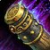

Talents
In 10.2 we use a very similar talent build for all content. We will go into full detail about every single talent, why we are using our current builds, and specific flex talents that can be taken for specific moments.
Talent Tree Overview
This talent tree shows a basic overview of the value for every talent. The talents are ranked as such: Green for required, purple for situational, orange for optional, and red for never.
Class Tree
We will go into detail for each talent in the class tree, discussing what they do and when to take them.
Row 1

Soothing Mist
Required
Unfortunately, we are required to take this talent in order to access several important talents later in the tree. This ability will never be used.
Row 2


Improved Roll
Optional
A nice talent that can occasionally be taken for an extra movement ability. If you take this talent with Celerity, you gain three charges of Roll. If you take this talent with Chi Torpedo, you gain two charges of Chi Torpedo.
Row 3


Tiger Tail Sweep
Never
This talent reduces the cooldown and range of Leg Sweep, which could be useful at times, but, unfortunately, we don't have enough points to grab this along with the better talents in our tree.
Row 4


Grace of the Crane
Required
This increases all healing we receive by 8%, making us much more survivable.
Row 5

Elusive Mists
Never
This talent gives us 6% damage reduction while channeling Soothing Mist, which is really bad considering we never channel Soothing Mist.
Row 6
Chi Wave / Chi Burst
Required
Both of these talents aren't the most useful, but they allow us to branch to some very important healing talents. Chi Wave provides more single target damage and healing, along with the ability to pull packs from ranged, while Chi Burst does more damage on AoE. You can use one of these abilities whenever you don't want to spend energy on a global cooldown.
Row 7


Profound Rebuttal
Required
This talent increases the critical healing of Expel Harm, further making it an extremely strong self heal.
Row 8
Close to Heart
Optional
This talent is extremely strong and is one of Monk's group buffs. Not only does it increase all healing that you receive by 8%, but it increases the healing that your allies receive, too.
Row 9

Save them All
Never
This talent may sound strong, but we have no reliant way of healing our allies, so it's not worth putting points into.
Row 10

Summon Jade Serpent Statue
Never
This talent requires a lot of points to get to and doesn't do enough healing to make it worth taking. Having to reapply Soothing Mist to yourself would be really annoying, too.
Specialization Tree
We will go into detail for each talent in the class tree, discussing what they do and when to take them.
Row 1
Keg Smash
Required
This is your most important damaging ability. You want to use it off cooldown to generate AoE threat and reduce your brews' cooldowns. It is also one of your highest damaging abilities in AoE.
Row 2

Purifying Brew
Required
This ability clears 50% of your total stagger, reducing the amount of damage you take. Anytime you are below max health and have high stagger, you want to use this ability. It can also be used when low on stagger during bosses to buff your Celestial Brew.
Row 3



Staggering Strikes
Never
This talent causes our Blackout Kick to decrease our stagger by a small amount. Unfortunately, the stagger reduction is so small that we do not ever run this talent.
Row 4
Hit Scheme
Required
This talent is a massive damage increase. It makes our Blackout Kick increase the damage of our next Keg Smash by 10%, stacking up to 4 times.
Row 5


Celestial Flames
Never
This talent applies our Breath of Fire to all targets that are hit by our Spinning Crane Kick, which serves absolutely no purpose as you can keep Breath of Fire up on enemies 100% of the time without it. The extra 5% damage reduction is heavily outweighed by other talents, too.
Row 6


Breath of Fire
Required
This ability does a decent amount of damage and makes all enemies that are hit deal 5% reduced damage to you.
Row 7


Scalding Brew / Sal'salabim's Strength
Required
Both Scalding Brew and Sal'salabim's Strength are very good talents. Due to Sal'salabim's Strength synergizing with our builds more, however, we currently take this talent in every build we play.
Row 8

Dragonfire Brew / Charred Passions
Required
Both of these talents are extremely important as they synergize with our tier set and dictate how our build plays. Dragonfire Brew increases the damage of our Breath of Fire based on 100% of our stagger, making it an extremely high damaging ability on AoE. Charred Passions makes our Breath of Fire apply a buff to ourselves, causing our Blackout Kick and Spinning Crane Kick to deal additional fire damage. In mythic+, we tend to take Dragonfire Brew, but, in raid, we tend to take Charred Passions. Ultimately, however, you can take either one you want in all situations.
Row 9
Bonedust Brew
Required
This talent gives us a brew that applies a debuff onto enemies. It does a lot of damage, gives us additional brew cooldown reduction, and even benefits from our brew cooldown reduction abilities.
Row 10
Bountiful Brew / Attenuation
Required
Bountiful Brew gives us a chance to cast Bonedust Brew on our enemies, providing us with further uptime. Attenuation increases the damage and healing of our Bonedust Brew by 20%, while also decreasing its cooldown every time it does damage or healing. While both are powerful, Bountiful Brew is currently stronger, as it has a relatively high proc chance.
Default Talent Builds
These are the default talent builds that can be ran for mythic+ and raid. Keep in mind that certain talents can change based on your needs, but we always take the required talents for both talent builds.
Mythic+ Talents
Regarding the situational talents in our class tree, we want to always take Ring of Peace, as it is an extremely helpful utility spell in all of the dungeons. By default, we run Detox, too, but this can be swapped out for dungeons that don't have any poison dispels (more discussed in the dungeons & affixes section). We also take Spear Hand Strike, our interrupt, for every dungeon. For our optional class talents, I choose to take Celerity and two points into Close to Heart. If you want to take Chi Torpedo instead, you can take one point out of Close to Heart for Improved Roll, but the extra 4% increased healing for us and our allies is very helpful.
There is not much room for choice in our spec tree. We take all of the situational AoE talents, such as Dragonfire Brew and Stormstout's Last Keg. We also take Pretense of Instability for increased tankiness, especially in large pulls where a ton of mobs are constantly meleeing us. As discussed previously, if you want fewer keybinds, you can swap out Black Ox Brew for Bob and Weave, along with Special Delivery, instead of Rushing Jade Wind. If you do choose to take Special Delivery, however, you should take Light Brewing instead of Training of Niuzao for more brews.
Raid Talents
Our class tree is very similar to the mythic+ build, with only a few differences. In raid, we only ever take Ring of Peace when we want Eye of the Tiger for single target parsing. We can also take Improved Touch of Death for single target parsing, but it requires you to get rid of a point from Close to Heart or Generous Pour. If there is another monk in your raid providing Close to Heart or Generous Pour, you can put points into Eye of the Tiger and Improved Touch of Death, too. Again, you can replace Celerity for Chi Torpedo, but it is then recommended that you also take Improved Roll. Lastly, I choose to take Hasty Provocation, as the increased speed taunt is really helpful on a lot of bosses where the two tanks are spread out.
Our spec tree is also very similar to the mythic+ build, with the only differences being that we don't run Dragonfire Brew, Pretense of Instability, and Stormstout's Last Keg. We never want to run Pretense of Instability because we don't need the extra survivability, so, instead, we put a point into Face Palm for a big single target damage increase. Instead of Dragonfire Brew and Stormstout's Last Keg, we run Charred Passion and Chi Surge for additional single target damage. In the current raid, there is never enough constant AoE to make Dragonfire Brew worth it, but, whenever there is a fight with a decent amount of AoE, we want to run Stormstout's Last Keg instead Chi Surge. Rushing Jade Wind is a lot stronger than Special Delivery on single target, so we don't want to ever run Special Delivery, which means that Light Brewing is also not a very good option. You can still run Bob and Weave instead of Black Ox Brew if you wish, though.